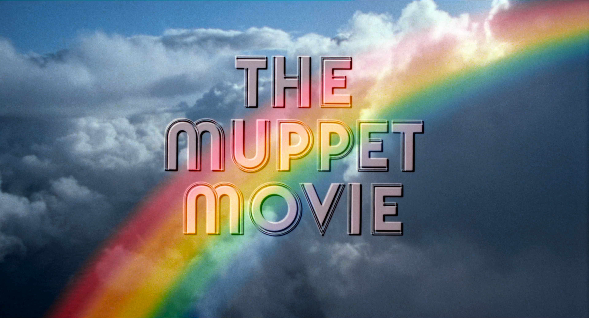

O Mundo Mágico dos Muppets/Muppets: O Filme
(Brazilian Portuguese)
|  |
|
Title: O Mundo Mágico
dos Muppets
Released on:
VHS |
Title: Muppets: O Filme
Released on:
DVD
Disney+
Note: Most, if not all
songs are left undubbed. |
WATCH
drive.google.com
(This has two audio tracks, one for the original dub and one for the redub. Also includes English.)